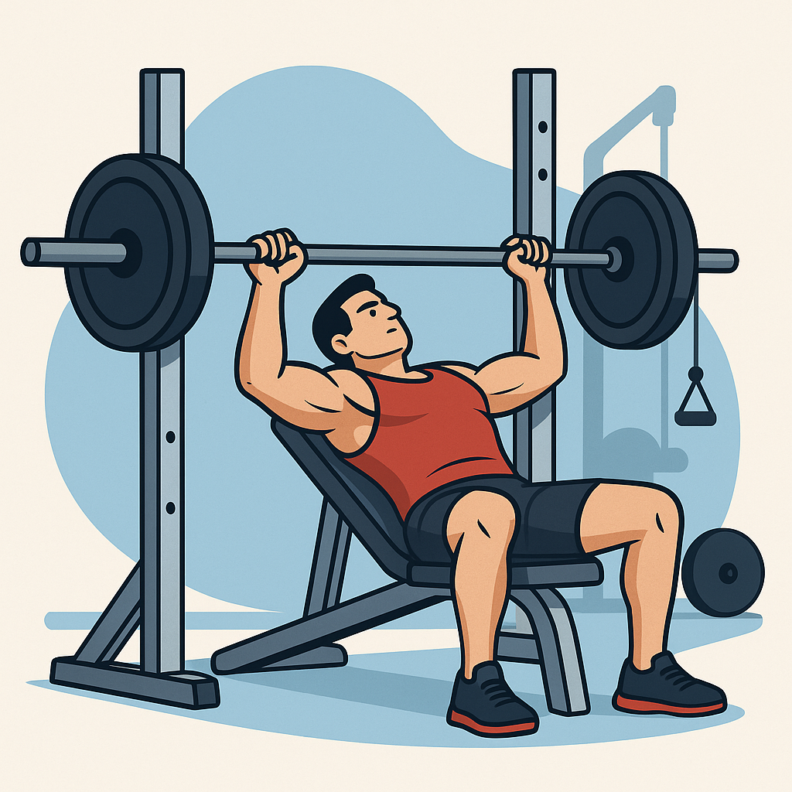

重訓課表
每次訓練，選四項動作來做
胸部

- 史密斯上胸 10kg（單邊）或 機械上胸 10kg（槓片單邊）
- 槓拎臥推 10kg（單邊）或 機械臥推 15kg（槓片單邊）
- 機械雙槓下胸 15kg（槓片單邊）
- 機械夾胸 30kg 或 龍門架繩索夾胸 5kg（單邊）
- 纜繩前三角 10kg
背部

- 引體向上 補41kg
- 機械闊背下拉 20kg（槓片單邊）
- 機械握把划船 10kg（槓片單邊）或 地雷管寬握划船 15kg
- 直臂下拉 20kg
- 滑輪下拉 35kg
肩部

- 機械寬握肩推 30kg
- 機械窄握肩推 30kg
- 啞鈴肩飛鳥 5kg（單邊）
- 啞鈴後三角 10kg 或 cable後三角 4.5kg（單邊）
- 纜繩三頭下壓 18kg
腿部

- 哈克蹲 20kg 或 史密斯寬距深蹲 12.5kg（單邊）
- 機械腿推 25kg（單邊）
- 機械前腿 2.5kg（單邊）
- 機械腿外展 40kg
- 機械腿後勾 2.5kg